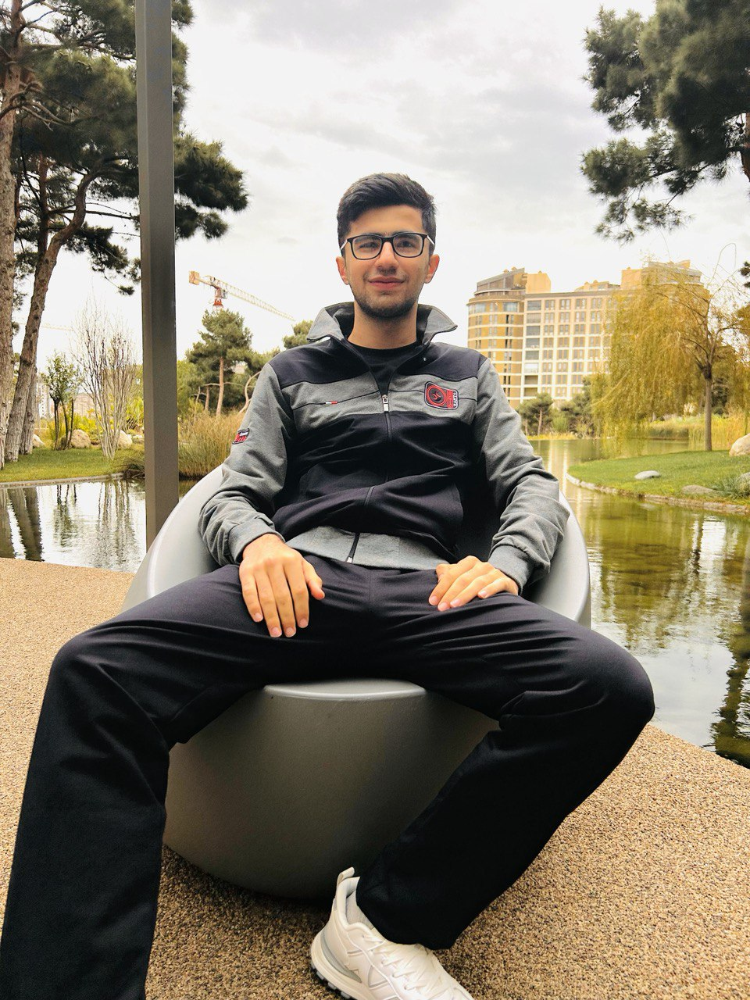
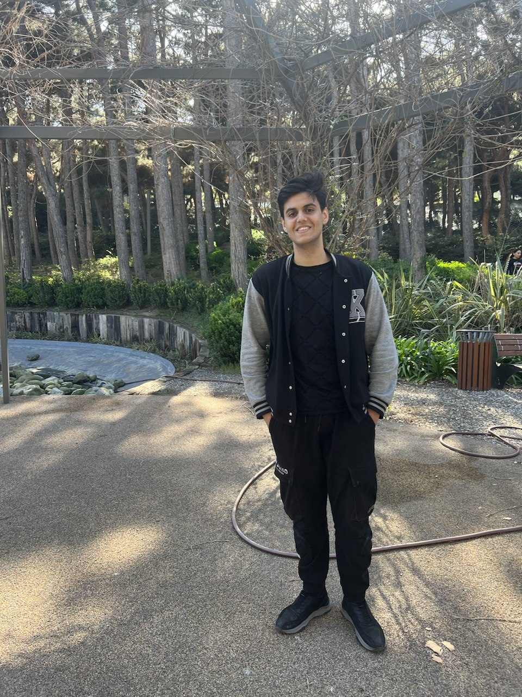

I am currently a first-year student at ADA University, pursuing a degree in Computer Science. From a young age, I've been fascinated by the intricate world of programming and algorithms.
Throughout my academic journey, I have actively participated in various informatics Olympiads, both nationally and internationally. It is with great pride that I can say I have been awarded medals in these competitions, a testament to my dedication and passion for the field.
Proudly representing team WebWizards, I'm dedicated to advancing my skills in programming. My future goals revolve around continuous self-improvement and innovation in my chosen field.

Gazanfar Valiyev
Right now, I am first year student of electrical engineering at ADA University. From my childhood, I was interested in micro schemas, and I loved to break some toys just to see how it works.
My academic life started recently, but I managed to experience lots of things such as going for school teaching children the basic programming skills, making electrical circuit with my team, and basically learning the fundaments for studying electrical engineering.
Proudly representing team WebWizards, I am excited to learn even more and advancing my skills in my major!

Nurchin Mammadli
I am 18. I am studying bachelors degree in Information Technologies at ADA.
From my early teenager years I have developed a strong interest to this field. My coursework at university has equipped me with a solid understanding of information systems and programming languages.
Honestly, I haven't been to any competitions but I am actively trying to improve my knowledge. And I believe there is a long way to go.